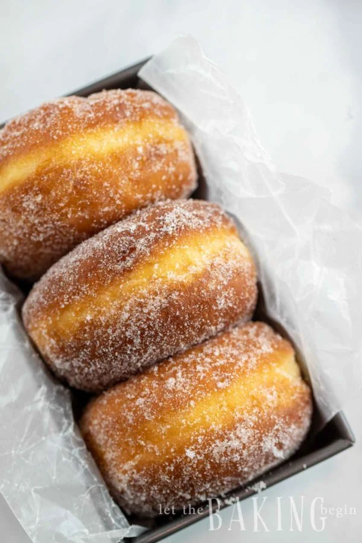

Donut

A sweet,buttery and fluffy treat
Only using yeast would produce the airy and fluffy donuts.
Ingredients
- Flour
- Milk
- Egg Yolks
- Yeast
- Sugar
Steps
-
Stir together warm water, sugar, and yeast and let rise for about 5 minutes.
-
Mix together the rest of the sugar donut ingredients, including the proofed yeast.
It’s best if you use a dough hook attachment to do this.
-
Roll out the sugar donut dough and use a 3-inch cookie cutter to cut out donuts.
-
Let rise again for about an hour, until doubled or tripled in volume.
-
Heat your oil and fry the donuts. Once they are cool enough, roll them in sugar.
-
Viola! Eat and enjoy your donuts!